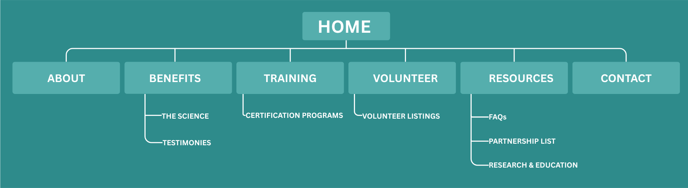

PROJECT CONCEPT
Description
The final project will be a professional and community-focused website for C.A.T.S. (Cats As Therapy and Support).
This website is designed to as a hybrid concept that combines the goals of an informational wellness resource and a community outreach platform. C.A.T.S. celebrates the healing bond between people and therapy cats by offering research-based information, certification guidance, volunteer opportunities, and inspiring stories about feline-assisted support.
Purpose
The main purpose of the C.A.T.S. website is to educate visitors about the benefits of therapy cats while also encouraging community involvement and partnerships. The website would serve as a welcoming online space for individuals interested in emotional support and animal-assisted wellness, volunteers who want to become involved in therapy cat programs, and shelters or organizations interested in collaboration. The site would present trustworthy information in a clear and engaging way while also promoting awareness of how cats can provide comfort, emotional support, and connection.
Objectives and Goals
The objectives of the website are to:
- Educate visitors about therapy cats and feline-assisted wellness programs.
- Provide accessible information about training, certification, and participation opportunities
- Encourage volunteerism and collaboration with shelters, clinics, and community organizations.
- Create a professional yet compassionate online presence that reflects both credibility and community care.
Intended Audience
The intended audience for this website includes several groups. First, it is meant for people seeking information about emotional support and therapeutic benefits of cats. Second, it is intended for volunteers, cat handlers, or animal lovers interested in joining therapy or outreach programs. Third, the site is designed for shelters, nonprofit organizations, and community partners that may want to collaborate on feline-assisted wellness efforts. Because the website serves multiple audiences, the content must be easy to navigate, visually welcoming, and informative.
Planned Features
Key features that may incorporated into the final website include:
- A Volunteer page with application or sign-up information.
- A Resources page linking to research, articles, and partner organizations.
- A Contact page with a contact form or communication details.
- Social Media integration
SITE MAP
Description
The website content will be organized using a clear top navigation menu that allows users to move easily between the major sections of the site. Based on the proposed wireframe, the site will include the following pages at a minimum:
- Home
- About
- Benefits
- Training
- Volunteer
- Resrources
- Contact
Content Organization
The site will begin with a homepage that introduces the C.A.T.S. mission and encourages visitors to explore the rest of the site. From there, users can learn more about the organization, read about the benefits of therapy cats, find information about training and certification, discover volunteer opportunities, access outside resources, and reach out through the contact page.
Subtopics
The website will include subtopics such as:
- The Science
- Testimonies
- Certification Programs
- Volunteer involvement
- FAQ's
- Partnership List
- Research & Education
Page Layout and Navigation
The page layout will use a clean and welcoming structure with a consistent header, horizontal navigation menu, hero image area, content section, calls to action, and a footer. Navigation will remain visible at the top of the page so users can move between sections easily. The layout is intended to feel professional, calm, and community centered. Content will likely be arranged in blocks with headings, short paragraphs, image areas, and buttons to guide visitors toward important information.
Simple Site Map Structure

WIREFRAME
Description
The homepage wireframe for C.A.T.S. is designed to create a welcoming first impression while also presenting the organization as trustworthy and organized. At the top of the page, the header includes the logo, organization name, and navigation links to the main pages. Beneath the header is a large hero section featuring a prominent headline, a supporting subheading, and a call-to-action button. This area is intended to immediately communicate the purpose of the site and encourage visitors to learn more.
Below the hero image, the homepage continues with multiple content sections. One section introduces the mission or values of the organization, another highlights the benefits of therapy cats with an image and supporting text, and another encourages visitors to subscribe, volunteer, or stay informed. The footer includes copyright information, accessibility or policy links, and social media references. Overall, the homepage design uses a balanced structure with clear content areas, buttons, and visual hierarchy. It is meant to feel compassionate, professional, and easy to use for a wide audience.
Wire Frame Image

PROJECT RESOURCES
Description
One of the primary resources I plan to use for this project is W3schools, along with several YouTube tutorials focused on specific features I plan to implement. W3Schools provides clear explanations and examples of HTML and CSS, which help me build a clean layout and user-friendly navigation for the C.A.T.S. website. This resource will support the overall structure of the site and ensure that content is organized in a way that is easy for users to navigate.
In addition, I selected three YouTube tutorials to support key functionality. One tutorial will help me create a contact form so users and organizations can reach out, another will guide me in integrating social media buttons to improve sharing and visibility, and the third will show me how to create a downloadable link for a volunteer form. These resources will help me implement important interactive features while improving both the usability and overall effectiveness of the website.